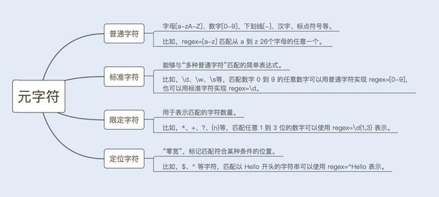

匹配过程
text="aabcab"
regex="bc"
回溯
text="abbc"
regex="ab{1,3}c"读取正则表达式第一个匹配符a和字符串第一个字符a进行比较，a对a，匹配
读取正则表达式第二个匹配符b{1,3}和字符串的第二个字符b进行比较，匹配，但b{1,3}表示1~3个字符，而NFA自动机具有贪婪特性，所以不会读取正则表达式的下一个匹配符c
使用b{1,3}和字符串的第四个字符c进行比较，发现不匹配，此时就会发生回溯，已经读取的字符串第四个字符c将被吐出去，指针回到第三个字符b的位置
发生回溯后，读取正则表达式的下一个匹配符c，和字符串的第四个字符c进行比较，结果匹配
避免回溯
避免回溯的方法：使用懒惰模式和独占模式
贪婪模式（Greedy）
懒惰模式（Reluctant）
独占模式（Possessive）
代码
match("ab{1,3}c", "abbc"); // abbc，贪婪模式，产生回溯
match("ab{1,3}c", "abbbc"); // abbbc，贪婪模式，不产生回溯
match("ab{1,3}?", "abbbb"); // ab，懒惰模式，不产生回溯
match("ab{1,3}+bc", "abbc"); // null，独占模式，不产生回溯String text = "<input high=\"20\" weight=\"70\">test</input>";
String reg = "(<input.*?>)(.*?)(</input>)";
Pattern p = Pattern.compile(reg);
Matcher m = p.matcher(text);
while (m.find()) {
System.out.println(m.group(0));// 整个匹配到的内容
System.out.println(m.group(1));//(<input.*?>)
System.out.println(m.group(2));//(.*?)
System.out.println(m.group(3));//(</input>)
// 输出：
// <input high="20" weight="70">test</input>
// <input high="20" weight="70">
// test
// </input>
}String text = "<input high=\"20\" weight=\"70\">test</input>";
String reg = "(?:<input.*?>)(.*?)(?:</input>)";
Pattern p = Pattern.compile(reg);
Matcher m = p.matcher(text);
while (m.find()) {
System.out.println(m.group(0));// 整个匹配到的内容
System.out.println(m.group(1));//(.*?)
// 输出
// <input high="20" weight="70">test</input>
// test
}在做好性能测试的前提下，可以使用正则表达式，否则能不用就不用，避免造成更多的性能问题.
文章的话到这里就结束了，希望大家在性能测试中，对正则表达式有自己的认识。今日的性能篇到此结束！
需要更多源码视频，面试题，Java技术书籍等学习资料的
可以关注我哦！加群772300343即可获取！
我是小架，我们下篇文章见！